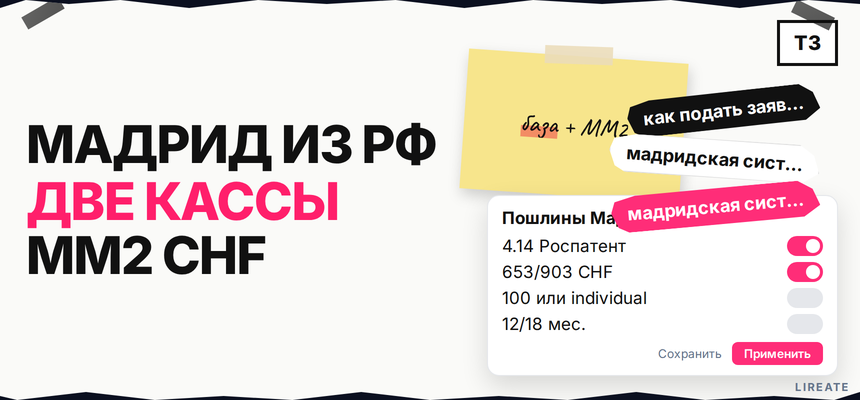
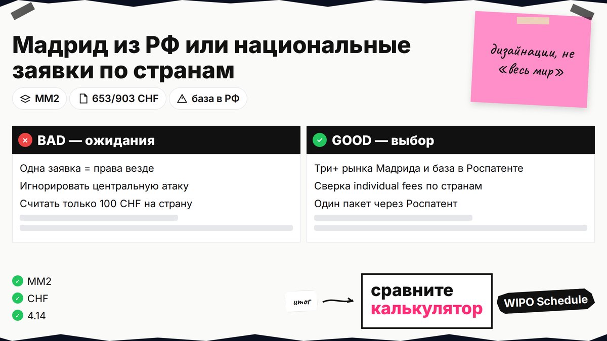
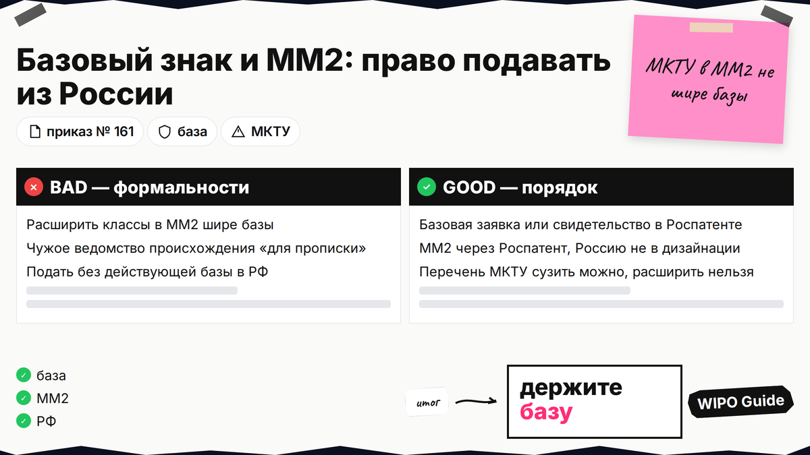
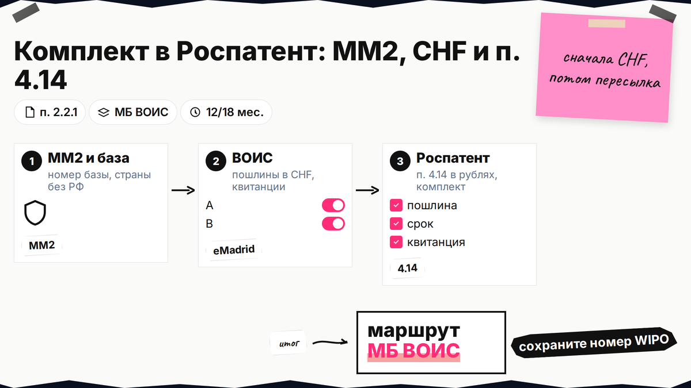

Знак уже в Роспатенте, а продажи выходят за границу - и в поиске всплывают мадридская система пошлины и двойная оплата. Из России международная заявка идёт через Роспатент, а не напрямую в ВОИС: рубли по п. 4.14, франки в Женеву, потом национальная проверка в каждой стране. Ниже вы сравните маршрут с национальными заявками, соберёте ММ2, посчитаете CHF с примером для Китая и заложите сроки предварительного отказа 12 или 18 месяцев.

TL;DR / Быстрый инсайт: Мадрид - одна международная заявка через Роспатент при базовом знаке в РФ. Пошлины: 5 000 ₽ + 1 000 ₽/класс сверх 3 (п. 4.14) и сборы ВОИС в CHF (Schedule). Страны: часто 100 CHF или индивидуальный тариф (individual fees). Права только в дизайнациях, не по всему миру. Не юруслуга (21.10.2026).
Регистрация по Мадриду не заменяет российское свидетельство: отдельный номер ВОИС и отдельные проверки в каждой стране. Язык заявки - английский, французский или испанский; пошлины ВОИС - в швейцарских франках (WIPO filing index). Система охватывает порядка 130 государств, но вы платите и проходите экспертизу только в тех, что указали как дизайнации. Процедура для РФ сверена с гайдом WIPO и приказом № 161.

Национальная подача - своя заявка в каждом ведомстве. Мадрид - один пакет на английском, французском или испанском через Роспатент, дальше ВОИС уведомляет выбранные страны (WIPO filing).
| Критерий | Мадрид из РФ | Только национально |
|---|---|---|
| Вход | Базовый знак + ММ2 в Роспатент | Заявка в каждое ведомство |
| Бюджет | 653/903 CHF + страны + п. 4.14 | Сумма пошлин по странам |
| Риски | Центральная атака на базу в РФ | Нет связи с российской регистрацией |
| Когда уместно | Несколько стран Мадрида, есть база в РФ | 1–2 рынка или страна вне системы |
Итоговый вердикт: если планируете три и более рынка из списка Мадрида и базовый знак уже в Роспатенте, единый пакет обычно дешевле администрирования, чем пять отдельных национальных заявок. Для одного рынка с индивидуальной пошлиной иногда выгоднее сразу идти в национальное ведомство - сравните строки в калькуляторе WIPO.
Делайте: для каждой страны отметить в individual fees стандарт 100 CHF или индивидуальную пошлину. Не делайте: считать, что одна заявка даёт права везде без дизайнаций.

Нужны связь с участником системы и базовая заявка или регистрация того же знака в Роспатенте (WIPO Guide). Подача - через Роспатент (приказ № 161). Перечень МКТУ в ММ2 можно сузить, но не расширить относительно базы (WIPO how to file). Россию в дизайнации не указывают.
До ММ2 - чек-лист L01 и подбор классов МКТУ в классификаторе Роспатента.
Базой может быть как поданная заявка на стадии экспертизы, так и действующее свидетельство - главное, чтобы номер базы совпадал с данными в ММ2. Если ведомством подачи указано не РФ, а, например, ОАЭ, комплект и тарифы определяет ведомство той страны; российский п. 4.14 к такому сценарию не применяется.
Делайте: держать принятую базу в силе и не расширять перечень товаров в ММ2. Не делайте: выбирать чужое ведомство происхождения только ради формальной "прописки" - отказ по формальным основаниям обнулит затраты на CHF.

По п. 2.2.1: заявление о пересылке в МБ ВОИС, ММ2, оплата ВОИС и п. 4.14, доверенность при представителе.
Маршрут: база в РФ → Роспатент → МБ ВОИС → публикация → дизайнации → национальная фаза 12/18 мес.
Делайте: сверить владельца с базовым делом. Не делайте: подавать без оплаты ВОИС - бюро не начнёт обработку (WIPO fees).
Запрос "мадридская пошлина это" в поиске часто смешивает все сборы в одну цифру. На деле считают слоями: российская пересылка, основная на 10 лет, доплата за классы сверх трёх и каждая дизайнация отдельно. Какие пошлины необходимо уплатить для подачи заявки в рамках мадридской системы - минимум два платежа (Роспатент + ВОИС) и иногда отдельные инвойсы при продлении.
| Вид | Куда | Размер (21.10.2026) |
|---|---|---|
| Пересылка | Роспатент | 5 000 ₽ + 1 000 ₽/класс сверх 3 (4.14) |
| Основная 10 лет | ВОИС | 653 / 903 CHF (п. 2.1) |
| Классы сверх 3 | ВОИС | 100 CHF/класс (п. 2.2) |
| Страна стандарт | ВОИС | 100 CHF (п. 2.3) |
| Страна индивид. | ВОИС | individual fees |
Пример: без цвета, 2 класса, Китай + страна со 100 CHF. ВОИС: 653 + 220 + 110 (Китай с 12.04.2026, Notice 9/2026) + 100 = 1 083 CHF; Роспатент 5 000 ₽. Курс CHF в рубли на дату платежа берите из калькулятора, не из статьи.
Делайте: дублировать расчёт в Madrid Fee Calculator eMadrid. Не делайте: ставить 100 CHF на Китай или США без таблицы.
Мадридская система оплата пошлины из Российской Федерации на практике - два независимых платежа. П. 4.14 перечисляют в рублях по реквизитам Роспатента из таблицы пошлин. Сборы ВОИС - в CHF; сумму и получателя показывает Madrid Fee Calculator в eMadrid после выбора дизайнаций и классов (WIPO fees RU).
Скидка 90% на основную пошлину для заявителей из наименее развитых стран к российским компаниям не относится. Курс пересчёта CHF в рубли на дату списания банка в статье не фиксируем - ориентир только калькулятор WIPO.
Делайте: хранить PDF калькулятора, платёжки и ММ2 в одной папке; проверить, что в квитанции ВОИС совпадает сумма строк калькулятора. Не делайте: один платёж на два ведомства или оплату CHF после отправки бумаг без подтверждения зачисления.
Регистрация на 10 лет, продление ещё на 10 (WIPO Guide). После публикации в бюллетене WIPO каждое национальное ведомство смотрит знак по своим правилам.
| Этап | Срок | Действие |
|---|---|---|
| Предварительный отказ | 12 мес. (до 18, если страна заявила) | Ответ по праву страны, часто через поверенного |
| Молчание ведомства | После срока ст. 5 | Охрана считается предоставленной |
| Продление Мадрида | Каждые 10 лет | Основная пошлина + сборы по странам (Schedule п. 6) |
Это не уведомление Роспатента по относительным основаниям: там другие сроки и пошлины на ответ. По Мадриду спор ведут в ведомстве дизайнации; отказ в одной стране не снимает другие (WIPO Guide).
Делайте: календарь по странам. Не делайте: ждать, что Мадрид отменяет национальную экспертизу.
Центральная атака - слабое место схемы: прекращение или отзыв базовой регистрации (или заявки в случаях, прямо названных в Протоколе) в первые пять лет может отменить международную регистрацию целиком (WIPO Guide). Поэтому споры по российскому знаку, неиспользование и досрочное прекращение базы бьют по всем дизайнациям сразу.
Территориальность: регистрация товарного знака в России не отвечает на вопрос, может ли правообладатель предъявить знак в другой стране. Нужна охрана там - через дизайнацию по Мадриду или прямую национальную заявку. Парижская конвенция даёт лишь отдельные инструменты (приоритет, известность), но не заменяет регистрацию в каждом рынке.
Делайте: продлевать базу и Мадрид синхронно. Не делайте: расширять перечень в ММ2 шире российской базы.
Соберите ММ2, оплаты и подайте в Роспатент; зафиксируйте CHF в eMadrid и дедлайны 12/18 мес. по каждой дизайнации. Перед подачей ещё раз пройдите реестры по чек-листу L01 - конфликт в экспортном рынке дешевле закрыть до оплаты стран. Для приоритета КНР - регистрация товарного знака в Китае; для базы в РФ - регистрация товарного знака на Лирейт.
Материал проверен: редакция Лирейт, практика международной регистрации через Роспатент.
Достоверность данных: п. 4.14, Schedule WIPO, приказ № 161, Протокол 2025 и Notice 9/2026 сверены на 21.10.2026. Показы Яндекс Вордстат в среде подготовки не запрашивались.
Да, если база принята. Без приёмки базы комплект не соберут. Проверьте статус дела до оплаты CHF.
От 5 000 ₽ по п. 4.14 плюс 653/903 CHF и сборы за страны и классы. Рубли за CHF зависят от курса на дату платежа.
В individual fees и Notice 9/2026 (ставки с 12.04.2026).
Нет, только сузить перечень.
Риск центральной атаки и отмены международной регистрации. Закройте вопросы по базе до или сразу после регистрации в РФ.
Нет. Нужна дизайнация по Мадриду или национальная регистрация в нужной стране.
Роспатент - по ГК РФ. Предварительный отказ по ст. 5 - по праву страны дизайнации в срок 12/18 мес., ответ через местного представителя.